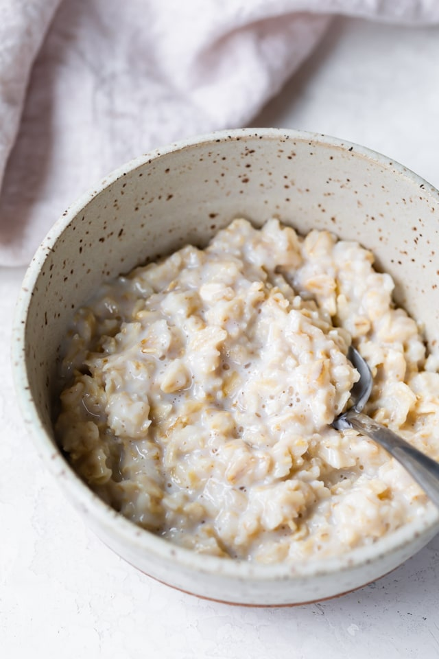

Oatmeal

Servings
Ingredients
- 1/2 cup quick oats, steel cut oats or rolled oats
- 1/4 cup milk
- 1 tsp salt
- 1/4 cup water
Feel free to add any ingredients of your choosing, such as fruits or nuts.
- Combine oats and water/milk
- Microwave on high for 2 minutes
- Mix any additional ingredients